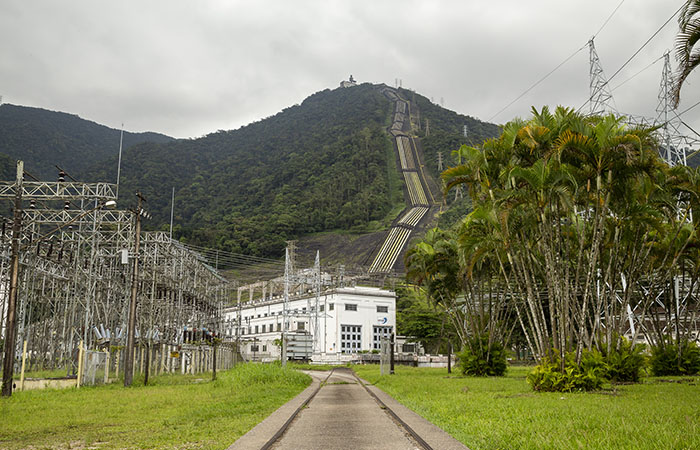
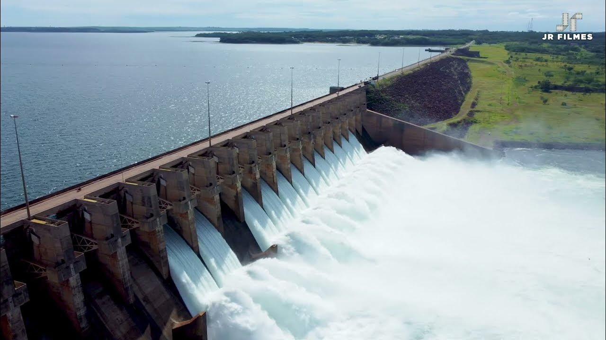
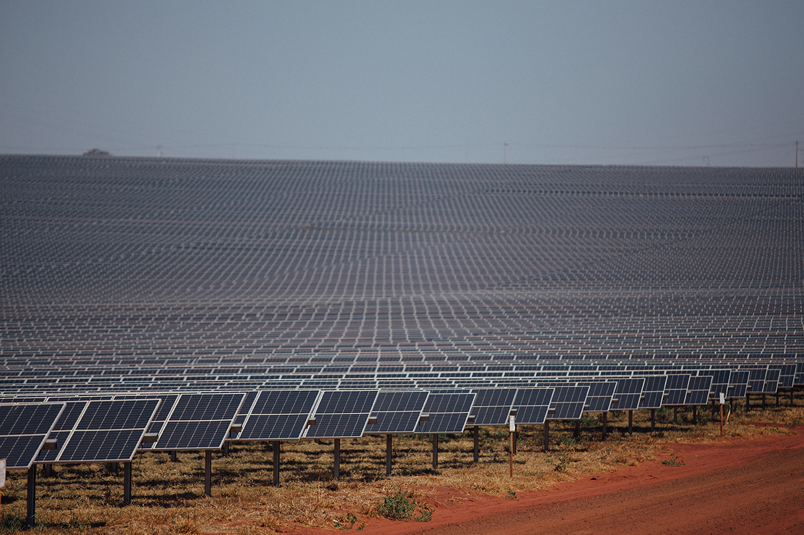
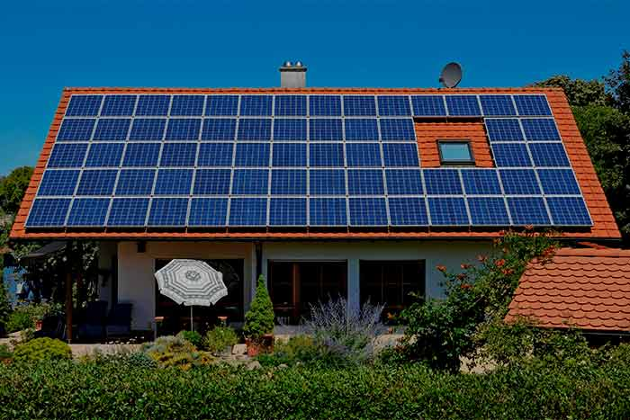

Crescimento Energético de São Paulo

O estado de São Paulo, o mais populoso e economicamente desenvolvido do Brasil, tem uma longa história de crescimento energético para sustentar suas demandas industriais, comerciais e residenciais. A evolução dos meios de produção de energia em São Paulo reflete as mudanças tecnológicas, o avanço industrial e a crescente preocupação com a sustentabilidade. Embora as hidrelétricas tenham dominado a matriz energética paulista por muitas décadas, novas fontes, como a energia solar fotovoltaica e formas menos convencionais, como a geração de energia por manivelas, têm ganhado destaque nas últimas décadas. Este trabalho visa explorar o crescimento energético do estado, com foco principal nas hidrelétricas e fontes renováveis, além de abordar algumas curiosidades sobre formas de geração menos convencionais.
A energia hidrelétrica tem sido amplamente utilizada no estado desde o início do século XX, aproveitando o vasto potencial hídrico dos rios paulistas. O princípio das hidrelétricas baseia-se na conversão da energia potencial da água armazenada em um reservatório em energia cinética ao ser liberada para passar por turbinas. A força da água movimenta essas turbinas, que por sua vez acionam geradores, convertendo a energia mecânica em eletricidade.
A primeira grande usina hidrelétrica de São Paulo foi a Usina de Henry Borden, inaugurada em 1926 em Cubatão, utilizando o desnível natural da Serra do Mar para gerar energia. Essa usina foi crucial para o fornecimento de energia às indústrias que começavam a se estabelecer no estado, sobretudo na região metropolitana de São Paulo.
Outro marco no desenvolvimento da energia hidrelétrica foi a inauguração da Usina Hidrelétrica de Ilha Solteira, em 1973, localizada no Rio Paraná, na divisa com o Mato Grosso do Sul. Com uma capacidade instalada de mais de 3.400 MW, Ilha Solteira é a maior usina do estado e uma das maiores do Brasil. Sua construção foi parte de um grande projeto de infraestrutura para expandir a capacidade de geração energética do país durante o regime militar, atendendo à crescente demanda de eletricidade para o processo de industrialização.

A Usina Hidrelétrica de Paraibuna possui uma capacidade instalada de 88 MW e tem um papel é crucial na estabilização do fornecimento de energia e na gestão das águas que abastecem parte da Grande São Paulo. O reservatório de Paraibuna, além de contribuir para a geração de eletricidade, é um recurso importante para o abastecimento de água e controle de cheias na região do Vale do Paraíba.
Recentemente, o estado de São Paulo tem investido cada vez mais em energia solar fotovoltaica, uma tecnologia que converte a luz solar em eletricidade. Embora o uso dessa fonte de energia tenha sido implementado de forma tardia no estado, seu crescimento tem sido expressivo. A implementação à energia solar começou a ganhar força em São Paulo principalmente na última década
Um dos maiores marcos para a energia solar no estado foi a inauguração da Usina Solar de Pereira Barreto, em 2020, com uma capacidade instalada de 158 MW, o suficiente para abastecer cerca de 200 mil residências. Pereira Barreto é uma das maiores usinas solares do Brasil e destaca o potencial de São Paulo para aproveitar essa fonte limpa e renovável, mesmo não sendo uma região com os índices solares mais elevados do país.
Outro fator que tem contribuído para o crescimento da energia solar é a instalação de sistemas fotovoltaicos residenciais e comerciais, que têm sido incentivados tanto pelo governo estadual quanto federal, por meio de isenção de ICMS e outros benefícios fiscais. Atualmente, várias cidades paulistas, como Campinas e Sorocaba, têm visto um aumento considerável no uso de painéis solares em residências, comércios e indústrias, ajudando a diversificar a matriz energética do estado.
Embora não seja uma solução amplamente usada em São Paulo, a geração de energia a partir de manivelas é uma curiosidade interessante dentro do panorama energético. Esse tipo de energia mecânica é utilizado em dispositivos portáteis e em áreas isoladas, onde o acesso à energia elétrica é limitado. A energia gerada ao girar uma manivela é convertida diretamente em eletricidade por meio de um dínamo, e essa eletricidade pode ser utilizada para carregar baterias ou alimentar pequenos aparelhos.
Um exemplo prático dessa tecnologia em São Paulo pode ser encontrado em soluções de emergência para rádios e lanternas, que são vendidos em diversas lojas de utilidades. Esses dispositivos são especialmente úteis em regiões com instabilidade no fornecimento de energia ou em situações de camping e desastres naturais.